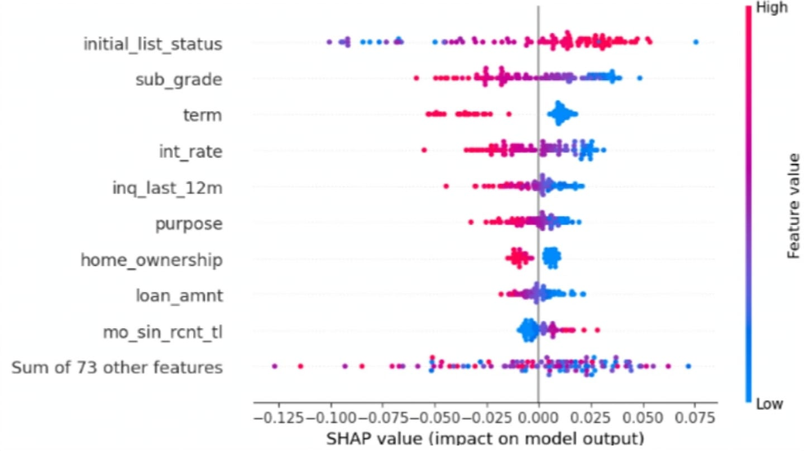

Why explainable AI matters today
Explainable AI (XAI) is increasingly viewed as essential rather than optional, especially as AI systems become more complex and influential. There's no use having the most advanced AI in the world if it's never used because nobody trusts it.
Understanding explainable AI: what it really means
As models and agents have become more complex, many now rely on Deep Learning techniques — commonly referred to as "black boxes", reflecting the fact that people often don't know what's happening inside the model, or believe its decisions are hidden from view. Explainable AI provides transparency, trust, accountability, and visibility for safety and ethics purposes.
Explainable AI techniques can be classified along three characteristics, each with two options.

The six categories of explainable AI techniques
Application stage
- Ante-hoc: the model is explainable by design — generally interpretable models, such as regression models with equations that explain their own decisions
- Post-hoc: the model needs an explainability or interpretability technique applied afterwards
Model dependency
Are the XAI techniques model agnostic or model specific? Can they be used with any type of model, or are they restricted to specific types like neural networks or decision trees?
Interpretability scope
- Global explainability: explains how the entire model works overall. Example: "These features are the most important across all predictions."
- Local explainability: explains why the model made one specific decision. Example: "This student was predicted to be at risk because of decreased attendance."

SHAP and LIME, the most common techniques
SHAP (SHapley Additive exPlanations) shows how each feature contributes to a prediction. For example, it can show how higher loan terms and interest rates have a negative impact on the likelihood of a loan being repaid.

LIME (Local Interpretable Model-Agnostic Explanations) creates understandable explanations for individual decisions. Rather than looking at the model as a whole, LIME looks at an individual case — showing the likelihood of a specific person repaying a loan, and the main features that impacted that decision.
These tools can also be combined to show how a specific customer compares to the group as a whole. Both generally work by using an "explainer model" that examines the features going into the main model, and its output, to predict the reasons behind a decision.

Why this is essential
As the ethics of AI use come under more scrutiny, XAI has become more essential than ever. A growing body of research shows that user trust is fundamentally linked to understanding how AI systems reach their decisions. Businesses are increasingly adopting XAI not just for technical transparency, but to meet growing regulatory requirements around AI accountability and fairness.
These techniques let businesses benefit from more complex models while still being able to justify and explain decisions — showing customers why a model produced the output it did, without giving away competitive advantage. Using the loan example above, a business could show a customer the top things they could improve to be accepted for a loan in future — improving trust and transparency for both the business and its customers.
Challenges and limitations of explainable AI
Explainable and interpretable AI can go a long way toward building trust in systems and decisions, but the models themselves still make mistakes, just as we all do. Where a decision might be appealed, or a classification is borderline, it's important to keep humans in the loop — making people within the business responsible for the actions and decisions made using AI, and giving the people who build these models a reason to understand how and why a decision was made, so they can keep improving it.
How businesses can start implementing explainable AI
Leading guidance is clear that XAI shouldn't be an afterthought — it needs to be integrated from design, through training, to deployment. Organisations should:
- Include explainability criteria early in model selection
- Build pipelines that automatically generate and store explanations
- Validate models using interpretability metrics alongside accuracy metrics
Doing so reduces "black box" risk and improves compliance readiness.
What's next: the future of explainable AI
The future of XAI is moving from nice-to-have to must-have for all AI usage. The accuracy-versus-interpretability trade-off is fading as businesses demand more from AI solutions — AI without interpretability can cause ethical, legal, and financial harm.
Regulations don't yet explicitly call out the need for explainable AI, but it pays to focus on transparency and ethics regardless. It's looking less like a question of if explainable AI becomes a mandatory regulatory requirement, and more a question of when.